구엘 공원
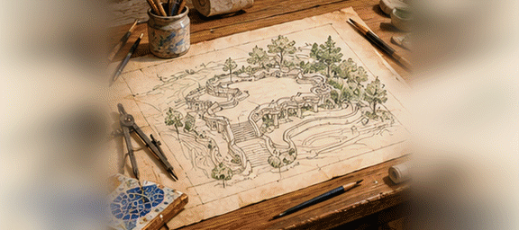
바르셀로나 뒤 언덕에 깨진 도자기 조각을 이어 붙인 구불구불한 벤치와 도마뱀 분수가 있는 정원. 건축가 가우디가 부자 구엘을 위해 짓다 만 마을이 공원이 되었다. 과자 집 같은 문지기 집 지붕이 햇빛에 반짝인다.
GIF 저장 · parkguell수채화풍 시네마틱 · 576×256 · 16프레임 · 9.82초 반복

바르셀로나 뒤 언덕에 깨진 도자기 조각을 이어 붙인 구불구불한 벤치와 도마뱀 분수가 있는 정원. 건축가 가우디가 부자 구엘을 위해 짓다 만 마을이 공원이 되었다. 과자 집 같은 문지기 집 지붕이 햇빛에 반짝인다.
GIF 저장 · parkguell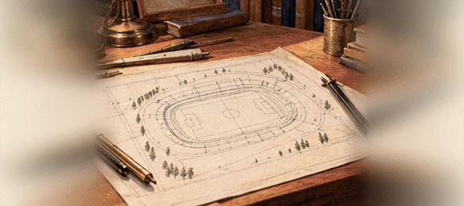
마드리드 북쪽 큰길가에 선 거대한 공놀이 경기장. 칠만 명이 넘는 사람이 비탈진 층층 자리에 앉아 흰 옷 입은 선수들에게 함성을 지른다. 밤이면 둘레의 등불이 대낮처럼 잔디를 비춘다.
GIF 저장 · bernabeu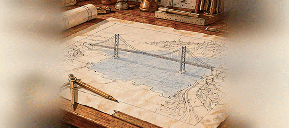
리스본 앞 테주 강 어귀를 한 번에 건너는 붉은 쇠다리. 두 기둥 사이에 굵은 쇠밧줄을 걸고 그 밑에 길을 매달았다. 아래로는 큰 배가 돛을 접지 않고 지나간다.
GIF 저장 · ponte25abril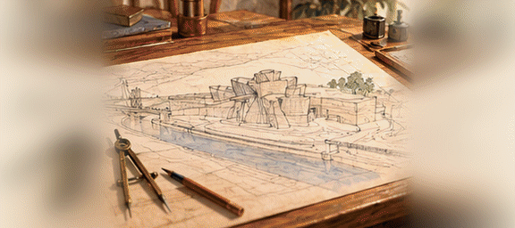
빌바오의 강가에 은빛 비늘을 겹겹이 두른 듯한 미술관이 물고기처럼 몸을 비튼다. 반듯한 벽 하나 없이 굽은 판으로 덮었는데, 해가 기울면 온 건물이 금빛으로 물든다.
GIF 저장 · guggenheimbilbao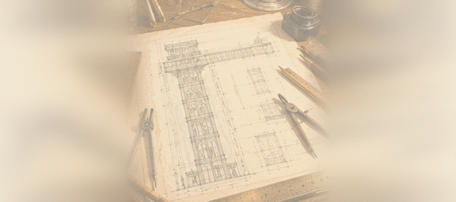
리스본 아랫동네에서 언덕 위 카르무 동네로 사람을 실어 올리는 쇠탑. 고딕 성당 창 같은 무늬의 쇠기둥 속에서 나무 상자 두 개가 오르내린다. 꼭대기 난간에서는 성과 강이 한눈에 보인다.
GIF 저장 · santajusta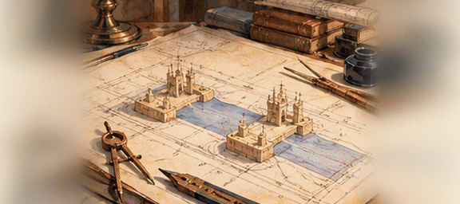
런던 탑 곁 템스 강을 건너는 다리. 두 개의 돌탑 사이 길이 한가운데에서 갈라져 하늘로 들려 올라가고, 그 사이로 큰 배가 지나간다. 탑 꼭대기는 높은 다리로 다시 이어져 있다.
GIF 저장 · towerbridge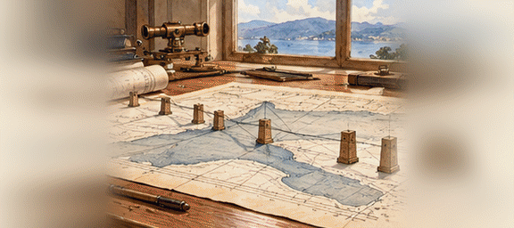
에든버러 북쪽 포스 만을 건너는 붉은 쇠다리. 마름모 꼴 쇠 뼈대 세 덩이가 팔을 뻗어 서로 맞잡고, 그 위로 김을 뿜는 수레가 바다를 건넌다. 늘 칠을 하는 사람들이 매달려 있다.
GIF 저장 · forthbridge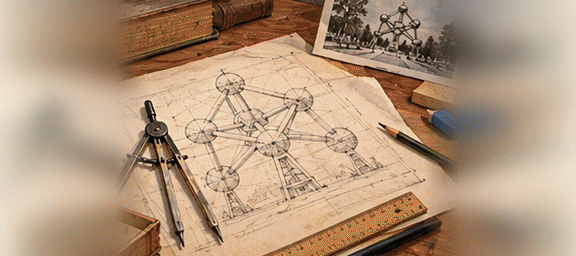
브뤼셀 북쪽 들판에 커다란 은빛 쇠공 아홉 개가 굵은 관으로 이어져 서 있다. 쇠 알갱이 하나를 수천억 배 키운 모양이라고 한다. 사람들은 관 속 계단과 상자를 타고 공에서 공으로 건너간다.
GIF 저장 · atomium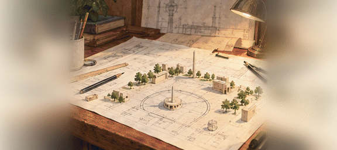
베를린 한가운데 솟은 콘크리트 바늘탑. 높은 곳에 은빛 공이 꿰여 있고, 공 속의 둥근 방이 천천히 돌아 손님은 앉은 채 온 도시를 한 바퀴 내려다본다. 해가 비치면 공 위에 십자가 빛이 떠오른다.
GIF 저장 · berlintv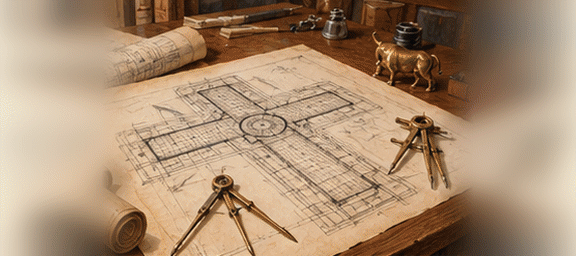
밀라노 대성당 곁에 십자 모양으로 뻗은 지붕 덮인 거리. 쇠와 유리로 엮은 둥근 천장 아래 가게와 찻집이 늘어서고, 한가운데 바닥에는 황소 모자이크가 있다. 비 오는 날에도 사람들이 거리를 거닌다.
GIF 저장 · galleria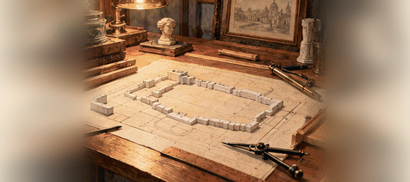
로마 카피톨리노 언덕 곁에 눈부시게 흰 대리석으로 쌓은 거대한 기념당. 층층 계단 위로 기둥이 길게 늘어서고, 한가운데 청동 기마상이 앉았다. 로마 사람들은 「타자기」나 「웨딩 케이크」라고 놀린다.
GIF 저장 · vittoriano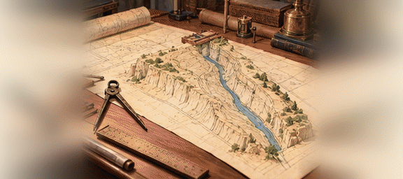
그리스 코린트 땅목을 칼로 자른 듯 곧게 판 좁은 물길. 양쪽 바위벽이 아찔하게 솟고 그 사이로 배 한 척이 겨우 지나간다. 펠로폰네소스를 도는 먼 뱃길을 하루 만에 줄였다.
GIF 저장 · corinthcanal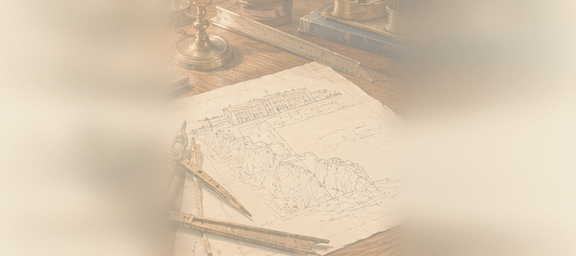
모나코의 바닷가 절벽 위에 바위에서 솟은 듯 선 흰 궁전. 바다를 사랑한 대공이 지은 집으로, 아래층 유리 수조 속에서 산 물고기가 헤엄치고 위층에는 고래 뼈와 배의 연장이 걸렸다.
GIF 저장 · oceanomonaco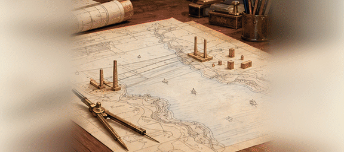
이스탄불의 보스포루스 해협을 한 번에 건너 유럽과 아시아를 잇는 쇠다리. 두 기둥에 걸린 쇠밧줄에 길이 매달렸고, 밑으로는 흑해를 오가는 큰 배가 지나간다.
GIF 저장 · bosphorusbridge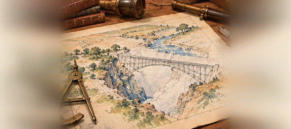
잠베지 강의 거대한 폭포 바로 아래, 물보라가 연기처럼 솟는 협곡 위에 걸린 쇠 아치 다리. 그 위로 김을 뿜는 수레가 지나가며 무지개 속을 건넌다.
GIF 저장 · vicfallsbridge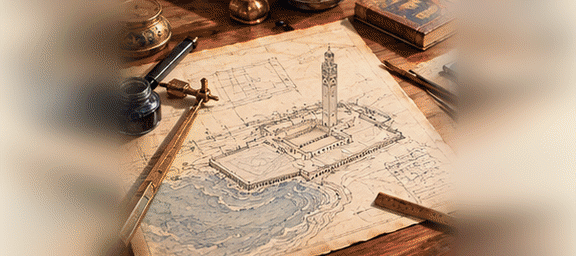
카사블랑카 바닷가, 바다 위로 내민 땅에 세운 거대한 모스크. 하늘을 찌를 듯한 첨탑 꼭대기에서 밤이면 메카 쪽으로 빛줄기를 쏜다. 기도실 바닥 일부는 유리라 발밑으로 대서양이 보인다.
GIF 저장 · hassan2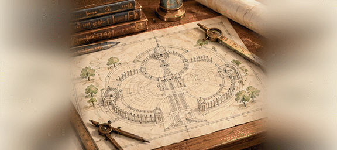
아프리카 상아 해안의 숲속 마을에 로마 성 베드로 대성당을 닮은 거대한 성당이 솟았다. 둥근 지붕은 그것보다도 높고, 벽마다 오색 유리창이 해를 받아 빛난다.
GIF 저장 · yamoussoukro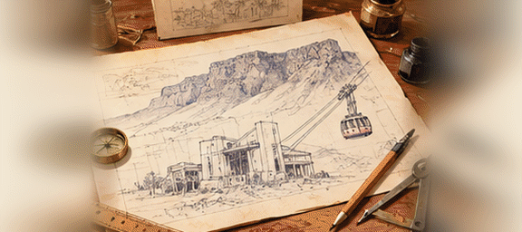
희망봉 북쪽, 식탁처럼 평평한 산꼭대기까지 쇠밧줄에 매달린 상자가 사람을 실어 나른다. 상자는 바위벽을 스치듯 올라가고, 꼭대기에서는 두 바다가 만나는 곶이 한눈에 보인다.
GIF 저장 · tablemtn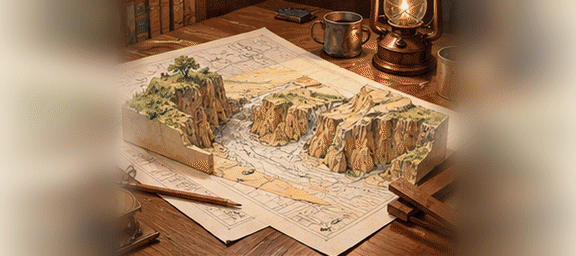
몸바사에서 대호수 기슭까지 사바나를 가로지르는 쇠길. 차보 강을 건너는 다리를 놓을 때 사람 잡아먹는 사자 두 마리가 일꾼들을 덮쳐 공사가 멈추기도 했다. 이제는 김 뿜는 수레가 기린 곁을 달린다.
GIF 저장 · ugandarail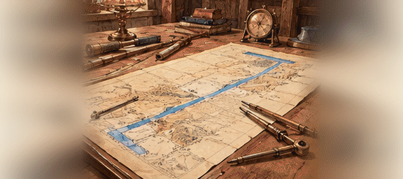
지중해의 포트사이드에서 홍해의 수에즈까지 사막을 곧게 판 물길. 아프리카를 돌아가던 뱃길이 반으로 줄었다. 사막 한가운데로 돛대와 굴뚝이 줄지어 지나가는 모습이 신기루 같다.
GIF 저장 · suezcanal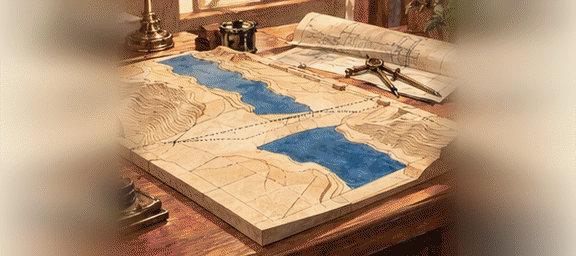
나일 강 상류 아스완에 강을 가로막은 거대한 흙과 돌의 둑. 그 뒤로 누비아 땅을 덮는 큰 호수가 생겨 해마다 넘치던 나일의 홍수가 멈추었다. 둑 위로 사람들이 걸어서 강을 건넌다.
GIF 저장 · aswandam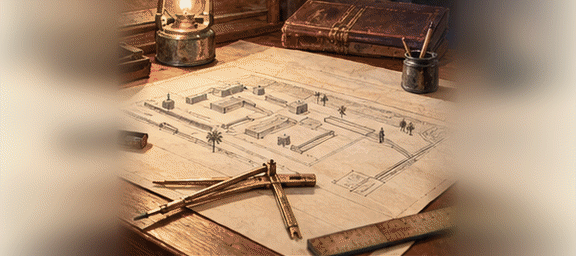
다마스쿠스에서 사막을 건너 메디나까지 순례자를 실어 나르는 쇠길의 끝 역. 석 달 걸리던 낙타 순례길을 며칠로 줄였다. 역 지붕 아래 김 뿜는 수레가 순례자를 내려놓는다.
GIF 저장 · hejazrail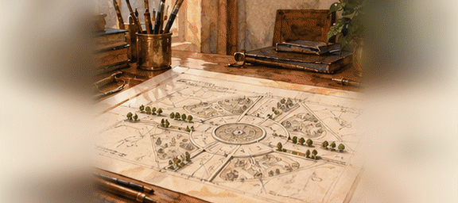
테헤란 서쪽 큰 광장에 선 흰 대리석 문탑. 네 다리가 아치를 이루며 하늘로 모여 오르고, 겉에는 옛 페르시아 궁전과 모스크의 무늬를 섞어 새겼다. 페르시아 왕국 이천오백 년을 기려 세웠다.
GIF 저장 · azaditower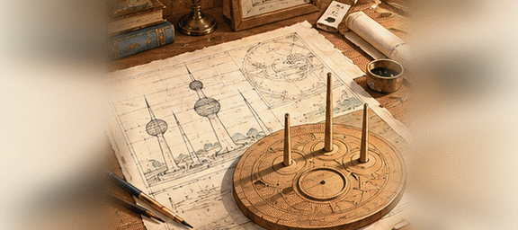
페르시아 만 바닷가에 선 세 개의 바늘탑. 가장 큰 탑에는 푸른 비늘 구슬 두 개가 꿰여 있고 하나는 물을 담은 큰 통이다. 사막 나라의 물과 바다를 자랑하는 탑이다.
GIF 저장 · kuwaittowers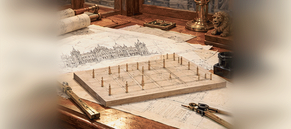
봄베이 섬에 선, 궁전보다 화려한 쇠길의 역. 고딕 첨탑과 인도의 둥근 지붕을 함께 얹고, 돌마다 공작새와 원숭이를 새겼다. 하루에도 수십만 명이 김 뿜는 수레를 타고 드나든다.
GIF 저장 · victoriaterminus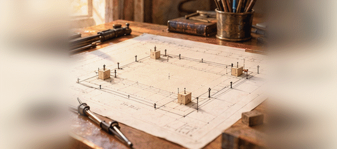
봄베이 섬 끝 바닷가에 바다를 향해 선 노란 현무암 개선문. 배를 타고 온 손님은 이 문을 지나 뭍에 오른다. 이슬람 궁전의 아치와 힌두 사원의 무늬가 섞여 있다.
GIF 저장 · gatewayindia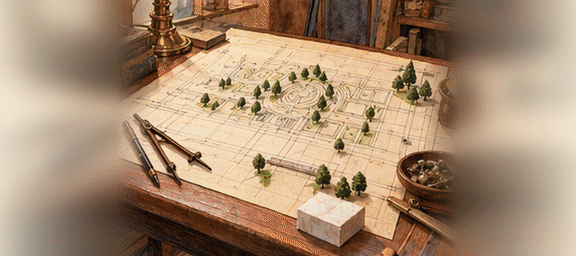
캘커타 넓은 풀밭 끝에 선 흰 대리석 궁전. 타지마할과 같은 마크라나 대리석으로 지었고, 둥근 지붕 꼭대기에서 청동 승리의 여신이 바람 따라 돈다. 앞 연못에 흰 궁이 거꾸로 비친다.
GIF 저장 · victoriamemorial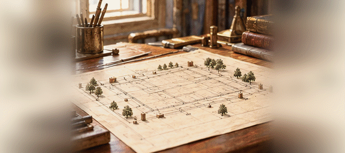
남인도 마이소르 왕국의 궁전. 붉은 둥근 지붕과 아치가 겹겹이 이어지고, 큰 잔칫날 밤이면 궁전 둘레에 매단 등불 십만 개가 한꺼번에 켜져 궁 전체가 금빛으로 떠오른다.
GIF 저장 · mysorepalace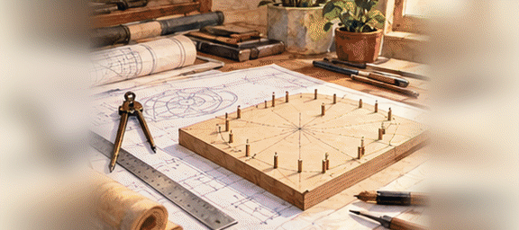
델리 남쪽에 활짝 핀 흰 연꽃 모양의 기도당. 대리석 꽃잎 스물일곱 장이 셋씩 모여 아홉 문을 열고, 둘레에는 아홉 연못이 물에 뜬 듯 받친다. 어느 종교를 믿든 누구나 들어와 조용히 기도한다.
GIF 저장 · lotustemple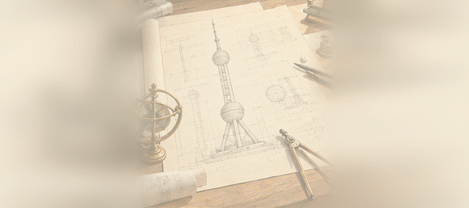
상해 황푸 강 건너편에 선 거대한 탑. 굵은 기둥 셋이 받친 줄기에 크고 작은 붉은 구슬이 꿰여 있다. 옛 시의 「큰 구슬 작은 구슬이 옥쟁반에 떨어진다」는 구절을 본떴다.
GIF 저장 · orientalpearl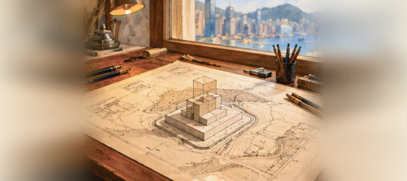
광주 남쪽 홍콩 섬 바닷가에 솟은 유리 탑. 대나무가 마디마디 자라 오르듯 세모난 몸이 층층이 줄어들며 하늘로 오른다. 겉의 쇠 뼈대가 커다란 X자를 그린다.
GIF 저장 · bochinatower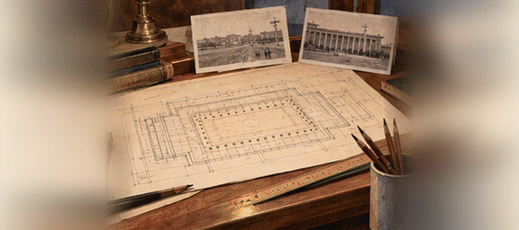
북경 천안문 광장 서쪽에 선 거대한 회의당. 열 달 만에 지었다는 기둥 늘어선 큰 집 안에 만 명이 앉는 강당과 성마다의 방이 있다. 천장 한가운데 붉은 별을 둘러 등불이 은하처럼 박혀 있다.
GIF 저장 · greathall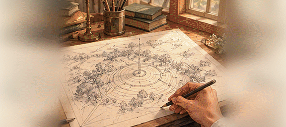
한양 남쪽 목멱산 꼭대기에 선 흰 바늘탑. 옛 봉수대가 있던 산마루에서 온 도성과 한강이 내려다보인다. 밤이면 탑이 빛깔을 바꾸며 빛나고, 연인들이 난간에 자물쇠를 걸어 둔다.
GIF 저장 · namsantower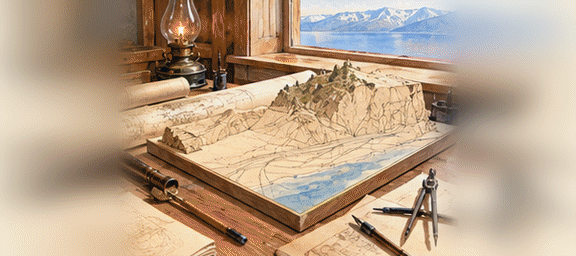
시베리아를 가로지르는 쇠길이 바이칼 호수 남쪽 기슭 절벽을 따라 돌아가는 구간. 터널 서른여덟 개와 돌다리 이백여 개로 호숫가를 이었다. 겨울에 길이 막히면 얼어붙은 호수 위에 선로를 깔기도 했다.
GIF 저장 · baikalrail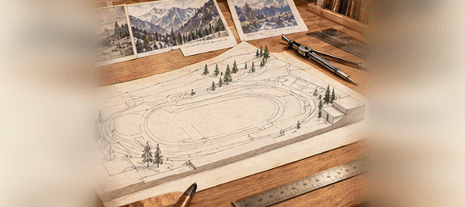
천산 산맥 골짜기 높은 곳에 꽁꽁 언 넓은 얼음 마당이 펼쳐져 있다. 사람들이 쇠날 신을 신고 얼음 위를 미끄러지듯 달린다. 골짜기 위에는 흙사태를 막는 거대한 둑이 있다.
GIF 저장 · medeu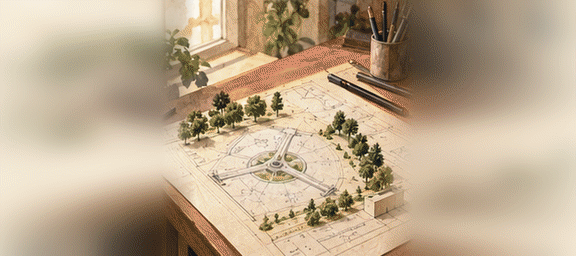
타슈켄트 북쪽에 선 쇠 뼈대의 바늘탑. 세 다리가 받친 줄기 높은 곳에 둥근 식당이 매달려 천천히 돈다. 땅이 자주 흔들리는 고장이라 흔들려도 쓰러지지 않게 지었다.
GIF 저장 · tashkenttv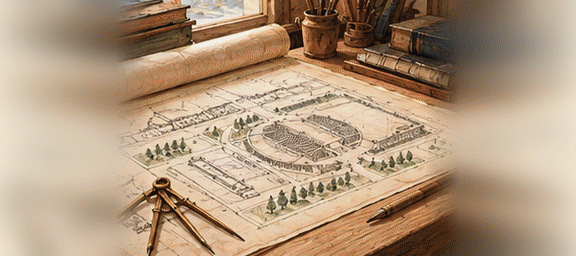
시베리아 오비 강가 새 도시에 선 거대한 극장. 기둥 늘어선 정면 위로 은빛 둥근 지붕이 덮었는데, 기둥 하나 없이 하늘을 덮은 둥근 지붕으로 이름났다. 혹독한 겨울에도 오페라와 춤이 열린다.
GIF 저장 · novosibopera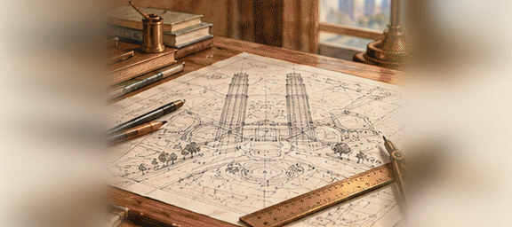
말라카 북쪽 내륙 쿠알라룸푸르에 나란히 솟은 은빛 쌍둥이 탑. 두 탑의 허리를 하늘다리가 잇고, 겉은 이슬람의 여덟 모 별 무늬로 짰다. 한동안 세상에서 가장 높은 집이었다.
GIF 저장 · petronas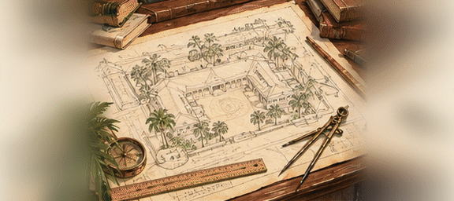
말라카 해협 끝 싱가포르 섬 바닷가의 흰 여관. 회랑과 야자나무 뜰이 이어지고, 먼 나라 상인과 글쟁이들이 대나무 부채 아래 붉은 술을 마신다. 이 여관에서 나온 분홍빛 술이 이름났다.
GIF 저장 · raffles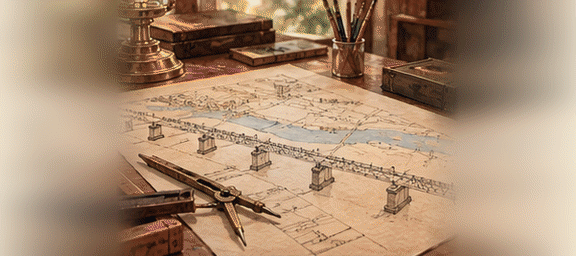
하노이 앞 홍강을 건너는 긴 쇠다리. 쇠 그물처럼 엮은 뼈대가 강 위로 끝없이 이어지고, 가운데로는 쇠 수레가, 양옆으로는 자전거와 사람이 오간다. 전쟁 때 여러 번 부서졌다 다시 이어졌다.
GIF 저장 · longbien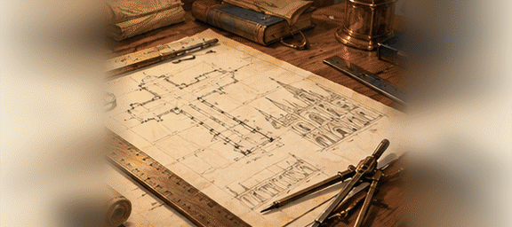
마닐라의 쇠로 지은 고딕 성당. 지진과 불에 여러 번 무너진 끝에, 쇠 기둥과 쇠판을 바다 건너 벨기에에서 배로 실어 와 짜 맞췄다. 겉은 돌처럼 칠해 손으로 두드려 봐야 쇠인 줄 안다.
GIF 저장 · sansebastian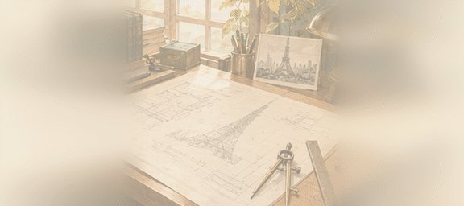
에도 남쪽 시바 숲 곁에 선 붉고 흰 줄무늬의 쇠탑. 파리의 쇠탑을 닮았지만 조금 더 높다. 밤이면 등불을 밝혀 온 도시의 표지가 된다.
GIF 저장 · tokyotower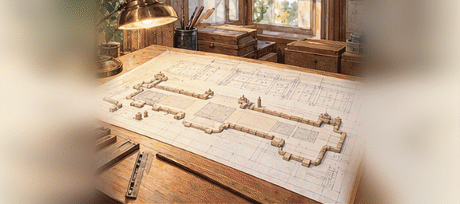
에도성 동쪽에 선 붉은 벽돌의 긴 역사. 양 끝의 둥근 지붕 아래 넓은 대합실이 있고, 그 앞으로 쇠길이 사방으로 뻗는다. 성 앞으로 곧게 난 큰길이 역 문까지 이어진다.
GIF 저장 · tokyostation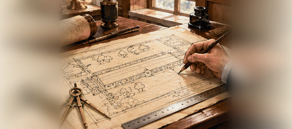
고즈케 땅 도미오카에 선 길고 긴 붉은 벽돌 공방. 쇠 기계 삼백 대가 누에고치에서 명주실을 뽑아낸다. 프랑스 기술자를 불러 짓고 전국에서 모인 처녀들이 실 뽑는 일을 배웠다.
GIF 저장 · tomioka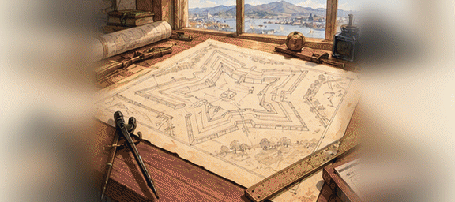
에조 땅 하코다테 들판에 하늘에서 보면 다섯 모 별 모양인 성채. 서양 축성법으로 대포를 막도록 쌓았다. 봄이면 해자 둘레에 벚꽃이 별 모양으로 핀다.
GIF 저장 · goryokaku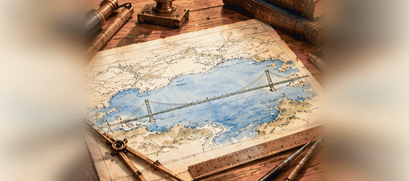
셋쓰 땅 아카시와 아와지 섬 사이 해협을 건너는 쇠다리. 두 기둥 사이 거리가 이 킬로미터에 가까워 매단 다리 가운데 가장 길다. 밤이면 쇠밧줄에 단 등불이 진주 목걸이처럼 빛난다.
GIF 저장 · akashibridge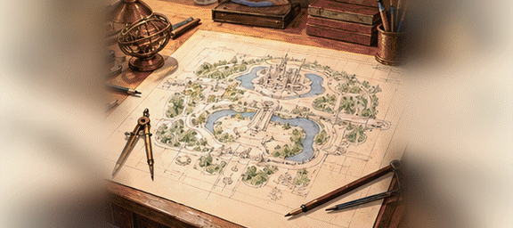
플로리다 늪지 한가운데 세운 거대한 놀이 왕국. 동화 속 성이 호수 위에 솟고, 둘레에는 증기선과 쇠 수레, 큰 귀를 단 쥐 차림의 사람들이 손님을 맞는다. 밤마다 성 위로 불꽃이 터진다.
GIF 저장 · disneyworld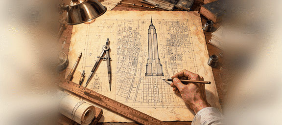
맨해튼 섬 한가운데 백두 층으로 솟은 석회암 탑. 한 해 남짓 만에 지었고 꼭대기의 뾰족한 바늘은 하늘을 나는 배를 매어 두려고 세웠다. 맑은 날에는 다섯 고을 땅이 내려다보인다.
GIF 저장 · empirestate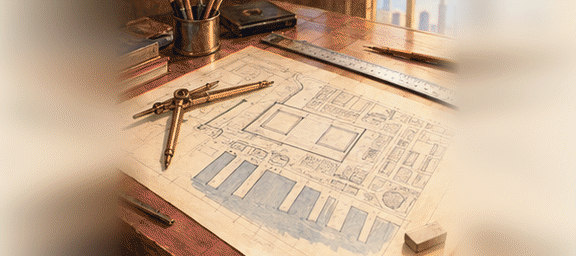
맨해튼 섬 남쪽 끝 바닷가에 나란히 선 은빛 쌍둥이 탑. 백열 층씩 똑같이 솟아 항구로 들어오는 배를 맞았다. 세상의 장사꾼들이 이 두 탑에 모여 바다 건너 물건을 사고팔았다.
GIF 저장 · wtc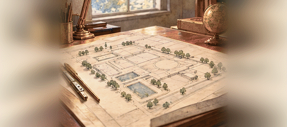
텍사스 바닷가 늪지 곁에 선 하늘 너머로 사람을 보내는 이들의 본거지. 둥근 방 가득 등불 판 앞에 사람들이 앉아 달까지 간 배와 말을 주고받는다. 뜰에는 집보다 긴 쇠 대롱 배가 누워 있다.
GIF 저장 · nasajsc